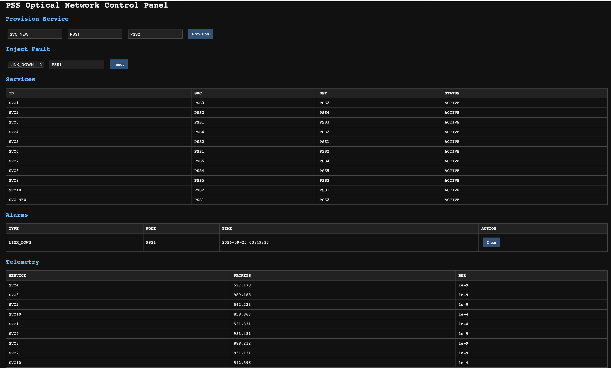
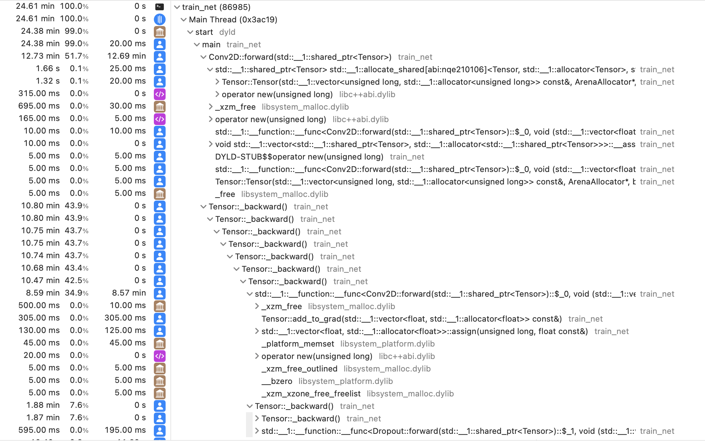
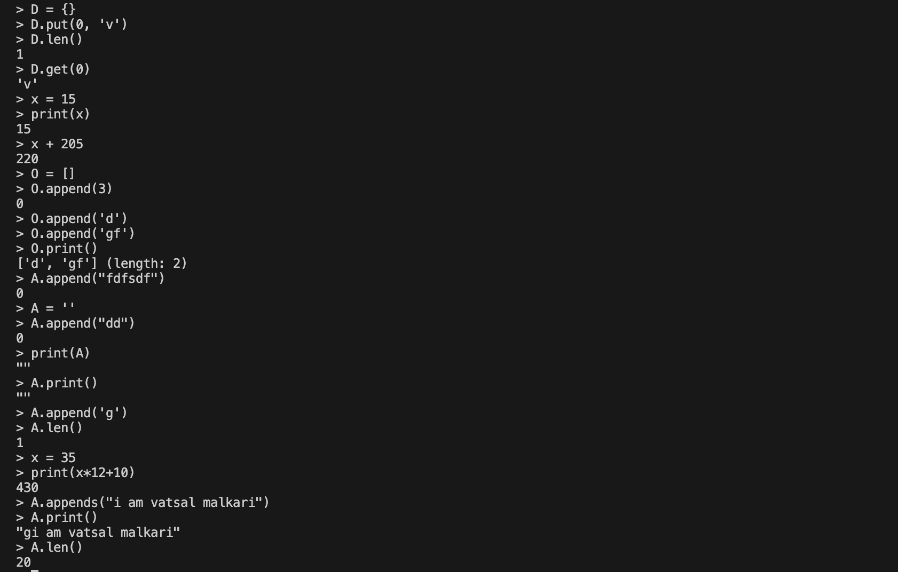
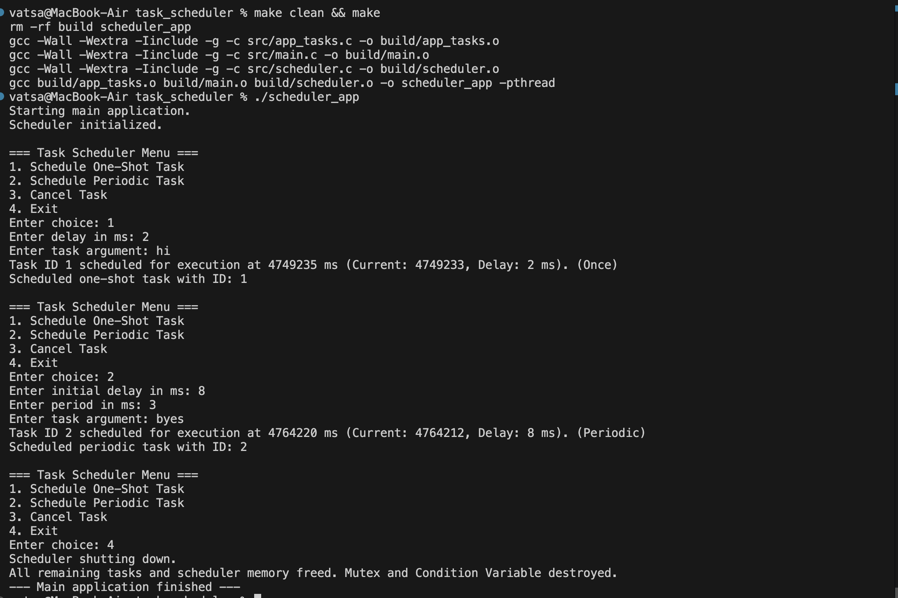
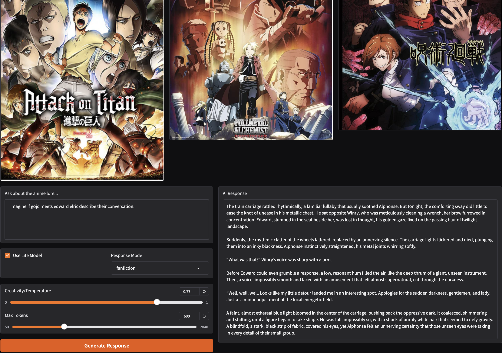

Hello, I'm
Vatsal Malkari
Data Science Graduate Student @ Rutgers University


Hello, I'm
Data Science Graduate Student @ Rutgers University
Get To Know More
I'm a Data Science graduate student at Rutgers with a background in Computer Science, focused on building high-performance systems and scalable ML pipelines. I enjoy working close to the metal—whether that means optimizing protein modeling by 41×, implementing neural networks from scratch in C++, designing data pipelines that operate reliably at scale, or building distributed systems in Java that stay consistent under fire.
Explore My
Software Verification Engineer Co-op
Data Engineering Extern
Browse My Recent

C++ discrete event engine processing 1.36M events/sec with Dijkstra routing, 1+1 protection switching, and lock-free concurrency. Deployed via Flask REST API + SQLite + Docker/Kubernetes, scaling to 10K services in a 43.8MB memory footprint.


Tensor::backward, near-zero mallocFramework-free engine with a custom DAG Autograd graph for backpropagation. Bitwise-aligned Memory Arena reducing OS heap allocation to <0.1% of thread runtime. Real-time webcam inference in under 100ms.

Core compiler components (tokenizer, parser, evaluator) with security-first design: bounds checking on all buffers, reference counting, input validation. Zero buffer overflows, zero memory leaks across 40+ tests.

C scheduler using Min Heap + Hash Map for O(log N) scheduling and O(1) cancellation. Replaced busy-waiting with pthread condition variables. Stress-tested with 2,000 concurrent tasks.

Semantic search and RAG system using ChromaDB and SentenceTransformers, enabling contextual querying and deep analysis of large anime script datasets.
What I'm Building Now
A strongly consistent, distributed engine designed to ingest a massive, rapid-fire stream of play-by-play events from live basketball games and instantly replicate updated player stats across a server cluster — with no lag and no dropped events.
Built from scratch in Java 21+, the system leverages Virtual Threads to handle thousands of concurrent client score-pull requests, a custom Raft consensus protocol over gRPC for node-to-node replication, and off-heap Direct ByteBuffers to eliminate GC pauses during rapid multi-player statistical updates.
Explore My
Get In Touch